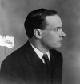

İrlanda özgür olmadığı sürece barış da olmayacak.
— Patrick Pearse
Bir öğretmen, avukat ve ateşli bir İrlanda milliyetçisi olan Patrick Pearse (1879–1916), 1916’da İngiltere’ye karşı gelişen Paskalya İsyanı’nın önde gelen temsilcilerinden biriydi. Neredeyse son yüzyıldır gelişen en önemli İrlanda isyanı olan hareket, 1921 yılında ülkenin bağımsızlığına kadar uzanan bir dizi olayın fitilini ateşledi.

Konuşmalarında sık sık İrlanda’nın kahramanlarına göndermeler yapan renkli bir hatip olan Pearse, bağımsız İrlanda’yı görecek kadar yaşamadı. İngilizler tarafından tutuklanıp askeri mahkemede yargılandı. 3 Mayıs 1916’da Dublin’de kurşuna dizildi. İdam edildiği yer ulusal bir anıt haline gelecekti.
Dublin’de doğan Pearse, genç yaşlarından itibaren İrlanda sorununa ilgi duymaya başladı. Theobald Wolfe Tone (1763–1798) gibi tarihsel şahsiyetlerden etkilenerek milliyetçi bir İrlanda grubuna katıldı. Bu sırada on altı yaşındaydı. yirmi üç yaşına geldiğinde grubun gazetesinde editörlük yapıyordu. İrlanda’nın eski dili Gaelce’nin yaşatılması için mücadele etti. 1908 yılında kardeşi Willie (1881–1916) ile birlikte İrlanda dilinde eğitim yapan Aziz Enda Koleji’ni açtı.
1913 yılında “İrlanda Gönüllüleri”nin kurucularından biri oldu. Bu militan grup daha sonra “İrlanda Cumhuriyetçi Ordusu”na (IRA) dönüşecekti. Yeraltı örgütünde hızla yükseldi ve 1916 isyanının liderlerinden biri olarak ön plana çıktı.
İsyan Paskalya’dan bir gün sonra başladı. Asiler Dublin’deki Merkez Postahane’nin kontrolünü ele geçirdiler. Binanın basamaklarında duran Pearse, İrlanda’nın bağımsızlığını ilan etti. Halkın onu destekleyeceğini ümit ediyordu. Ancak altı günlük bir mücadelenin ardından teslim olmak zorunda kaldı.
Aralarında Pearse’in de bulunduğu toplam on altı isyan lideri idam edildi. Bu ölümler büyük bir hoşnutsuzluğa neden oldu. Bu ruh hali radikal ve bağımsızlık taraftarı Sinn Fein Partisi’nin 1918 yılındaki zaferine büyük bir katkı sağladı. Sonraki yıl IRA İrlanda Bağımsızlık Savaşı’nı başlattı. Savaş 1921 yılında İngiltere’nin İrlanda’yı tanıması ile son buldu.
Ek Bilgiler
1- Paskalya İsyanı’nın liderlerinden biri de Eamon de Valera’ydı (1882–1975). İdamdan kıl payı kurtuldu. Daha sonra 1959 ve 1973 yılları arasında İrlanda başkanı oldu.
2- Merkez Postahane günümüzde hâlâ aynı yerdedir. Yenilenmiş olsa da bazı kurşun delikleri anı olarak muhafaza edilmiştir.
3- İrlanda 1949’a kadar Britanya İmparatorluğu’nun bir parçası olarak kaldı. 1949’da ise cumhuriyet ilan edildi.